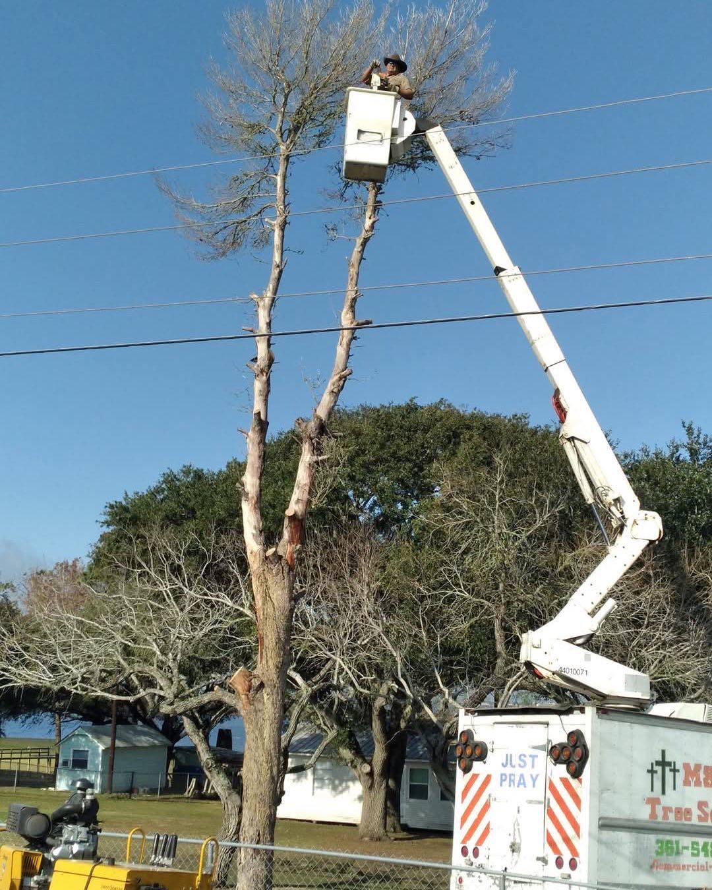
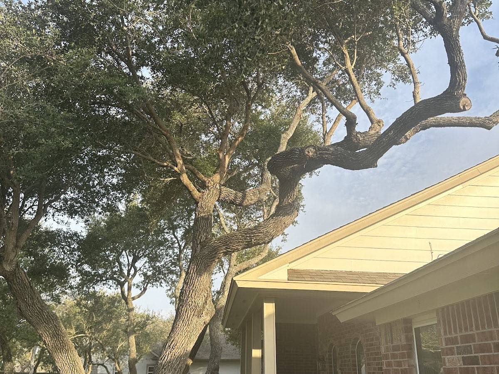
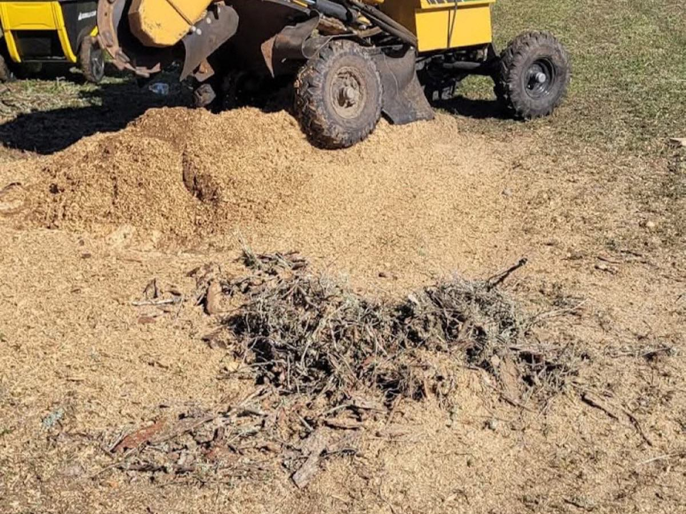
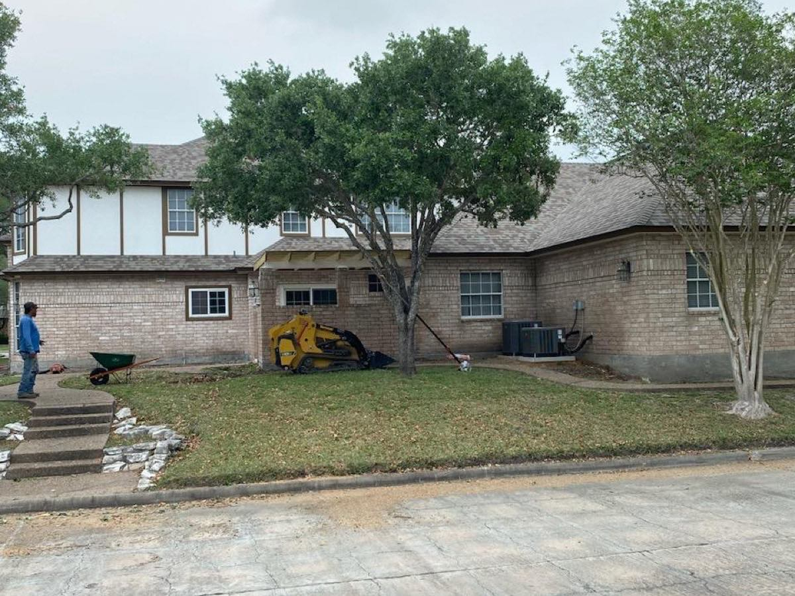
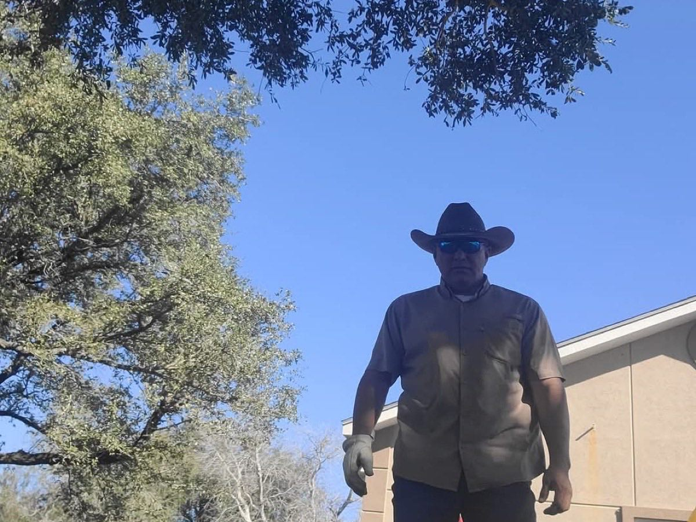
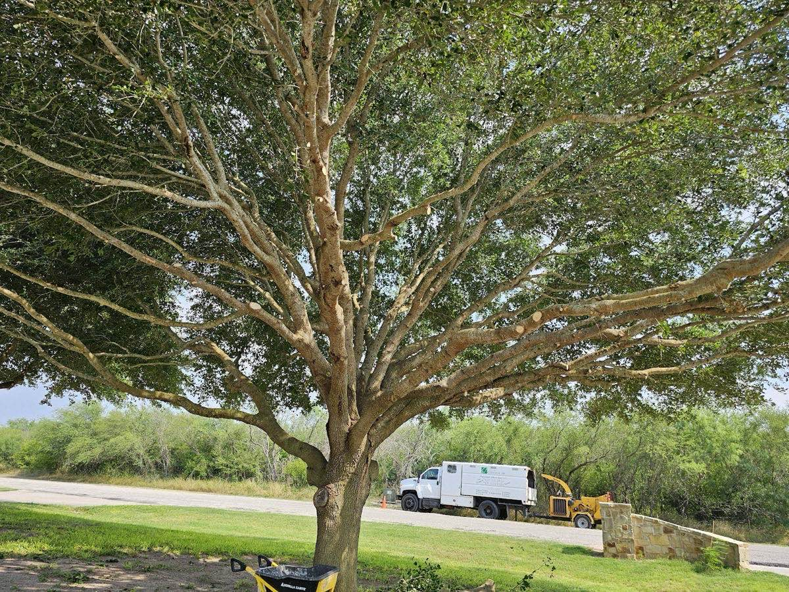

Fast, fair, and done right. From a single dangerous oak to full lot clearing and 24/7 storm cleanup, M&S brings the crew and equipment to handle it — often the same day you call.
Same-day estimates · 24/7 emergency & storm response

Real crews, real equipment, and a straight answer on price. Whatever's growing too close, too tall, or already down — we handle it start to finish, including hauling it all away.
Hazardous, dead, or oversized trees taken down safely — even big oaks growing into your roof or foundation. We bring the right rigging and clean up every limb.
Most requestedShape, thin, and lift canopies for healthier trees and clearance from roofs, lines, and driveways — done so it actually looks right.
Grind old stumps down below grade so you get your yard back — no tripping hazard, no eyesore, no regrowth.
Tree on the house, blocking the drive, or hanging after a Gulf storm? We answer the phone around the clock and get out fast.
24/7 responseWe don't leave a pile behind. Brush, limbs, and debris are chipped and hauled off so the job's truly finished.
Coastal palms cleaned up and skinned the right way — fronds, seed pods, and all — to keep them healthy and tidy.
There's a reason 36 reviews land on five stars: we show up when we say we will, with the equipment and people to finish the job that day.
Reviewers keep mentioning it — call in the morning, get a fair estimate the same day, and often the work done right after.
Bucket truck, chipper, grinder, and a real crew — "men and equipment that work," as one 15-year customer put it.
We walk the job, explain what's involved, and give you the number before any saw starts. No surprises.
Based right here near Taft and serving the surrounding towns — close enough to get to you quickly and clean up like it's our own yard.

Tell us what's going on — a quick call or the estimate form is all it takes to get started.
We come out, walk the tree, explain the plan, and hand you a fair, upfront price.
On the scheduled day the team rolls in with the right equipment, ready to work safely.
Every limb chipped and hauled off. We leave your yard cleaner than we found it.
"I called on a Saturday and Miller showed up same day to give a fair estimate for canopy trimming as well as debris removal. His arrival was punctual on the scheduled day. His team is professional as well as courteous."
"M&S went above and beyond to successfully remove 3 24" diameter oak trees that had grown too large and too close to my home's foundation. Limbs were overhanging my roof and insurance providers were threatening to cancel my policy."
"Miller and his crew took care of a problem tree for me with same day service and fast and friendly workers. They had the tree down and hauled away in no time! Worth every penny to let the pros do it."
"These guys rock. Very knowledgeable and explained the process before giving us a quote. Showed up on the day with a crew and machinery ready to go. Would highly recommend these professionals for any tree cutting job."
"Have used the M&S Team for lawn and tree service for 15+ years at multiple properties. Beautiful results. They show up as scheduled with men and equipment that work. Good people."
Every one of our 36 reviews is a five-star rating. We'd love to add yours after the job's done.
Real photos from real jobs — removals, cleanups, stump grinding, and the equipment we bring to handle them.




Based near Taft, we cover the surrounding San Patricio and Nueces County communities — from the bay towns to the edge of Corpus Christi. If you're nearby and not sure, just call and ask.
Yes. We come out, look at the tree, and give you a fair, upfront price at no charge — often the same day you call.
Absolutely. We answer the phone 24/7 for trees that are down, hanging, or blocking access after a storm. Call (361) 548-4857 anytime.
Always. Brush and limbs are chipped and hauled off as part of the job — we don't leave a pile behind.
From a single backyard tree to large oaks growing into a roof or foundation. We bring a bucket truck and proper rigging to do it safely.
Yes — we can grind the stump below grade so you can reclaim that part of your yard. Just ask when you get your estimate.
Taft and the surrounding Coastal Bend — Sinton, Gregory, Portland, Ingleside, Aransas Pass, and over toward Corpus Christi.
Call for the fastest answer, or send a few details and we'll get right back to you with a free estimate. Same-day visits across the Coastal Bend, 24/7 for emergencies.